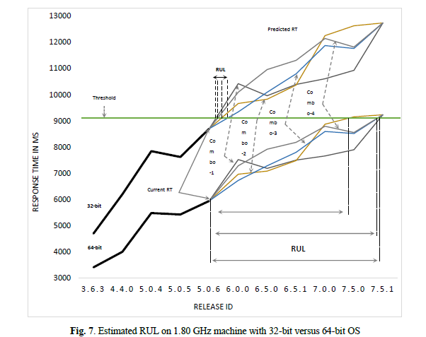
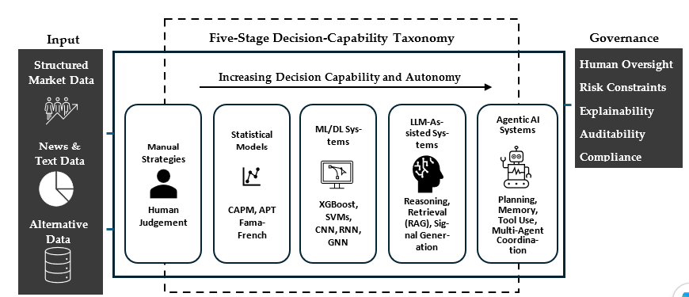

Response Time Based Remaining Useful Life (RUL) Prediction for Software Systems
This research extends Prognostic and Health Management (PHM) concepts from hardware to software systems.
It introduces a method to continuously estimate software Remaining Useful Life (RUL) using release, usage, and performance indicators. The model was statistically validated and tested using real-world data from the Bugzilla application. The approach supports proactive decisions on software upgrades, maintenance, reengineering, budgeting, rejuvenation, and retirement.

Analyzing the Influence of Processor Speed and Clock Speed on Remaining Useful Life Estimation of Software Systems
This research examines how computational conditions affect software degradation and remaining useful life estimation.
It analyzes the impact of processor speed and clock speed on reliability indicators, helping explain how system performance characteristics influence maintenance timing, lifecycle planning, and operational decision-making for software-intensive systems.

The Evolution of Alpha in Finance: Harnessing Human Insight and LLM Agents
This paper presents a five-stage taxonomy showing how alpha generation evolved from manual investing to AI-powered, agentic financial systems.
It highlights advances in machine learning, deep learning, multimodal data, and LLM agents capable of real-time reasoning and decision-making. The framework also addresses interpretability, governance, data reliability, and regulatory challenges for responsible deployment.